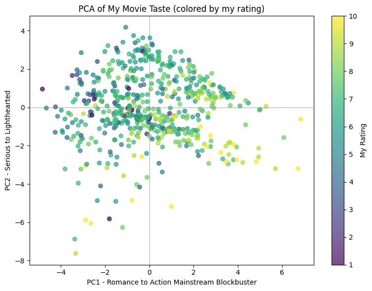

Abstract
I explored whether movie posters and text improve preference prediction beyond structured metadata, aligning 568 titles from 615 collected ratings. Dimensionality reduction and clustering showed that additional modalities did not automatically produce clearer structure. A review identified preprocessing leakage in the original classifier evaluation; the public notebook now uses fold-local pipelines, with a clean rerun still outstanding.
Align the representations before comparing them
The analysis combines 36 metadata features, 2,048-dimensional ResNet-50 poster embeddings and TF-IDF/SVD text representations. PCA, ICA, clustering, canonical correlation and modality ablations examine what each representation adds.

| Representation | Size |
|---|---|
| Collected ratings | 615 |
| Aligned titles | 568 |
| Metadata features | 36 |
| Poster embedding dimensions | 2,048 |
Source: original project materials linked below.
More features did not mean clearer groups
The first ten metadata principal components explained 59.7% of variance. A four-cluster metadata solution had a silhouette score of 0.194; the joint representation was approximately −0.002 and included a singleton cluster. These exploratory results offer little support for well-separated preference groups.
Evaluation is part of the result
The original classifier preprocessing was fitted before the train/test split. Its reported predictive scores therefore cannot be treated as validated generalization performance. The public notebook replaces the primary comparison with preprocessing inside repeated stratified cross-validation; those revised results are not yet available.
Explore the work
The original materials retain the calculations, assumptions, and supporting discussion behind this overview.
The readable analysis preserves existing notebook content with code and long output collapsed. Models were not rerun for this presentation; interpretation notes appear at the top of each preview.